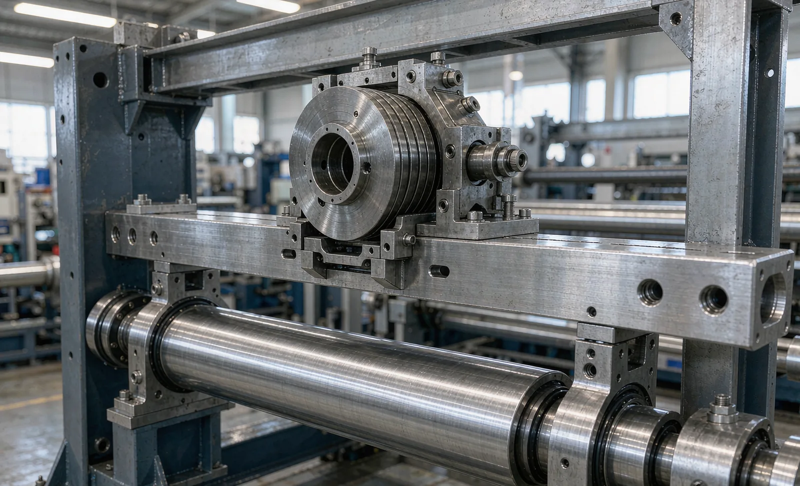
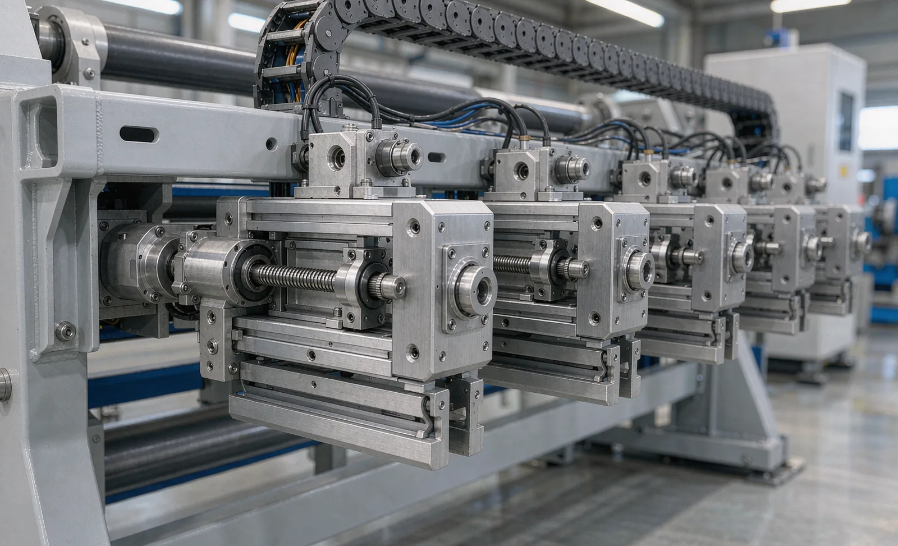

Published September 15, 2026 | By HDPTH Technical Editorial Team

Buyers spend a lot of time comparing blade types — razor, shear or score — and far less asking how the knife holders are carried. That is a mistake. The mounting is what keeps each blade exactly where it was set, at the pressure it was set to, while the machine vibrates, heats up and runs loaded for a whole shift. A flexible or poorly guided mounting converts a good knife into an inconsistent one: width drift, burrs on one lane that are absent on the next, and changeovers that depend on which technician set the bar. This guide compares the three mounting approaches and shows how to choose.
Why mounting design decides slit quality
Cutting quality is the product of blade geometry, blade condition, web support and — above all — stability of the blade-to-web relationship. Deflection or vibration in the holder changes knife pressure at the cut, which changes the deformation zone in the material. The visible symptoms are familiar: edge burrs, slivers and dust, inconsistent slit width across the web, and lane-to-lane quality differences that trace back to where each holder sits on the bar. Rigidity, adjustment preload and repeatability are therefore the three properties to judge, and they can all be specified numerically. For the cut itself, see our guides on slitting methods and knife clearance and overlap.
The three mounting options
Cantilevered knife bar
The knife bar is fixed at one machine frame and reaches over the web. Operators have open access from one side — holders, blades and spacers are visible and changeable without climbing the machine — which makes it popular on compact lines and narrow formats. The physics is less forgiving: deflection of an unsupported bar grows steeply with length, so on wide webs the outboard holders see more movement than those near the root. For narrow machines and materials with generous tolerance it is a perfectly sound, economical choice.
Supported (bridge) bar
The bar spans both machine frames and carries holders along its length. Supported at both ends, it resists deflection far better and keeps knife pressure consistent from edge to edge on wide webs — the default for wide-format slitters and precision work. The trade-offs are access (the operator works from both sides or uses carrier frames that slide out) and a heavier mechanical package. For buyers specifying width tolerance in the hundredths of a millimetre on wide material, this is the baseline configuration to demand.
Individual motorized knife heads
Each knife station is a self-contained head with its own motorized positioning drive and position feedback, mounted on the bar or frame. Positions are stored in machine recipes and moved automatically at product change. The benefits are repeatability (no manual scale reading), fast changeovers, and the ability to trim lane patterns at the HMI. The costs are purchase price, more components to maintain, and a spare-parts plan that includes drives and encoders. High-mix plants converting many width patterns per week see the fastest payback.
| Attribute | Cantilevered bar | Supported/bridge bar | Individual motorized heads |
|---|---|---|---|
| Rigidity across width | Decreases toward bar end | Strong, both ends supported | Depends on carrier bar; heads themselves rigid |
| Knife position repeatability | Operator-dependent | Operator-dependent, better scales/flags help | Recipe-stored, automatic, highest |
| Changeover time | Longest — manual reposition | Long — manual, both sides | Shortest — automatic move to stored positions |
| Access for blade changes | Excellent, one side | Both sides or sliding carriers | Good; heads designed for tool-free swap |
| Best suited to | Narrow webs, low changeover, budget builds | Wide webs, precision width, quality-critical | High-mix production, frequent width changes |
| Cost and complexity | Lowest | Moderate | Highest; adds drives, feedback, spares |

Changeover time: where the money hides
Slit-pattern change is one of the longest routine stops on a slitter rewinder. Manual repositioning of a dozen holders — measure, set, check, re-check against the first slit roll — can consume far more minutes than the mechanical work suggests, and errors surface as a scrapped start-up length. Recipe-stored motorized positioning moves the entire pattern in a couple of minutes and removes the measurement step entirely. When you model payback, use your own numbers: changeovers per week × minutes saved × cost of a line-hour, plus the scrap avoided at start-up. For plants that run one pattern for weeks, the same money may be better spent elsewhere.
Maintenance and wear considerations
- Adjustment hardware: lead screws, gib slides and clamps wear with use; require sealed, lubricated mechanisms and a stated service interval.
- Holder cleanliness: dust and slivers migrate into adjustments; easy disassembly for cleaning is a design feature, not an accident.
- Blade interface: the seat and clamping that hold the blade must resist fretting; inspect during blade changes.
- Motorized heads: add drives, cables and feedback devices to the PM plan; ask for diagnostics that report positioning faults on the HMI.
- Spare parts: holder internals and, for motorized heads, drive units should be on the recommended spares list from day one.
How to choose
Work down this list in order:
- Web width and lane count: the wider the web and the more lanes, the more the design must resist deflection — cantilever only for narrow formats.
- Width tolerance target: if your tolerance is tight, weight rigidity heavily and require a repeatability figure.
- Changeover frequency: many patterns per week justify motorized heads; stable patterns rarely do.
- Material sensitivity: dust- and burr-sensitive materials reward the most stable mounting and the least manual handling of knives.
- Operator safety and ergonomics: how blades are changed at height matters; see our guide on machine safety and guarding.
Tell us your width patterns, not just your width
Send the width patterns you run, how often they change and your tolerance targets. HDPTH will recommend the knife mounting and positioning system that fits your production mix — and prove repeatability at FAT.
Submit Your Project InquiryVerifying the mounting at FAT
Whatever the chosen design, write the verification into acceptance:
- Position repeatability test: command or set the same pattern three times and measure the achieved slit widths against the specification.
- Width consistency across the web: all lanes measured at start, middle and end of a production-length roll.
- Changeover demonstration: a full pattern change timed end to end, including first-slit verification.
- Edge quality per lane under the agreed inspection method — burr and dust criteria defined before the test, not after.
- For motorized heads: recipe recall, fault reporting and manual-jog behavior reviewed with your operators.
Frequently asked questions
Which knife holder mounting option gives the best slit quality?
Quality follows rigidity and repeatability, not a category name. A short, well-supported bar can outperform a long cantilever; individual motorized heads give the best position repeatability because each knife is set independently with its own drive and feedback. Whatever the arrangement, the buyer should require a runout and position-repeatability figure and verify it on their material at FAT.
Is a cantilevered knife bar acceptable for wide machines?
It depends on width, lane count and material. Cantilever designs are compact and give operators full access from one side, but deflection grows with the cube of unsupported length, so on wide machines or fine, high-margin materials the deflection can show up as width drift and inconsistent knife pressure across the web. For wide formats, a supported bar that spans both frames is the safer baseline.
Do individual motorized knife heads pay for themselves?
They do when changeovers are frequent and knife positions vary between products: recipe-stored positions move automatically, cutting changeover from tens of minutes to a few minutes and removing manual positioning error. For plants running one or two stable width patterns for weeks, the same investment may deliver little — the payback calculation is changeover count per week times minutes saved times line-hour cost.
How does knife holder rigidity affect dust and burrs?
A holder that vibrates or shifts under load lets the blade pressure vary at the cut. The result is a ragged edge, burrs on ductile materials and dust on brittle ones, because the knife no longer shears cleanly at a stable contact point. Rigidity of the mounting, preload of its adjustments and damping at the blade interface matter as much as blade sharpness for edge quality.
How often do knife holders need maintenance?
With normal use, holders need periodic cleaning, adjustment checking and lubrication per the manufacturer’s schedule — commonly inspected weekly and overhauled on a months-scale interval depending on duty. Motorized heads add drives and feedback components that should be included in the spare-parts and preventive-maintenance plan from the day of purchase.